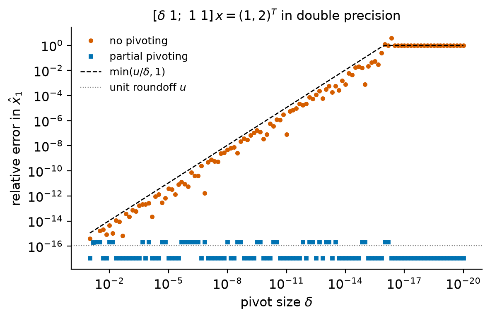
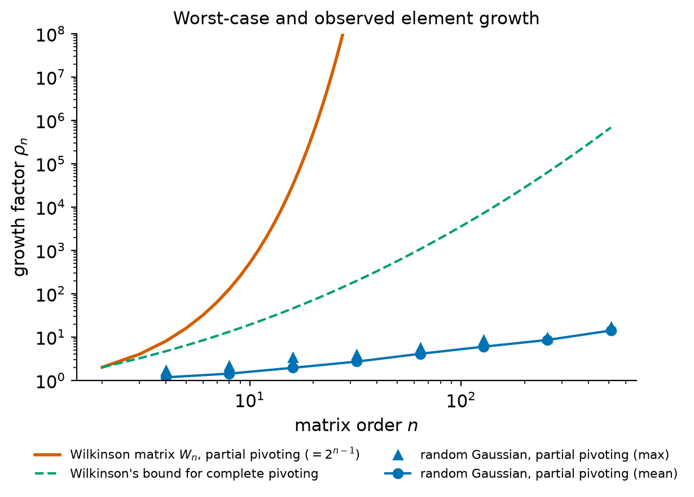
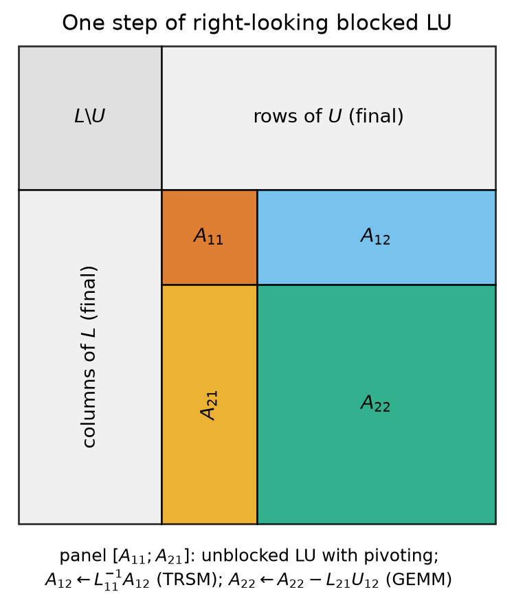

5. Gaussian elimination and LU factorization#
Solving a square linear system \(Ax = b\) is the most frequently executed task in scientific computing, and Gaussian elimination is the method that almost every library uses for a dense, unstructured matrix. The algorithm is taught in every first course on linear algebra. What that course usually leaves out is the subject of this chapter: that elimination computes a factorization \(A = LU\) into triangular factors, that the factorization is the object one should compute and reuse, that it can fail or become useless in floating-point arithmetic even for a perfectly well-conditioned matrix, and that a simple reordering of the rows (partial pivoting) repairs this in practice, although not in the worst case.
The chapter uses the vocabulary of the previous two chapters. From Chapter 3 we take the model \(\fl(x\mathbin{\mathrm{op}}y) = (x\mathbin{\mathrm{op}}y)(1+\delta)\) with \(|\delta|\le u = 2^{-53}\) and the constants \(\gamma_n = nu/(1-nu)\) (always assuming \(nu<1\)); from Chapter 4 we take the notions of backward error, backward stability and the condition number \(\kappa(A) = \|A\|\,\|A^{-1}\|\). Inequalities between matrices and absolute values of matrices are meant entrywise: \(|A|\) is the matrix with entries \(|a_{ij}|\), and \(|A|\le|B|\) means \(|a_{ij}|\le|b_{ij}|\) for all \(i,j\).
Learning objectives
After working through this chapter you should be able to:
solve triangular systems by forward and back substitution, count their cost, and state their backward stability;
describe Gaussian elimination as a product of Gauss transformations and derive the \(\tfrac23n^3\) flop count of the LU factorization;
prove when an LU factorization without pivoting exists and is unique, and prove that partial pivoting produces \(PA = LU\) for every nonsingular \(A\);
explain, with a correctly computed example, why small pivots destroy the accuracy of unpivoted elimination;
state the backward error results for LU and for the solution of \(Ax = b\), and explain the role of the growth factor;
distinguish the worst-case growth of partial pivoting (\(2^{n-1}\)), the unbounded growth of unpivoted elimination, and the small growth observed on random matrices;
use LAPACK and SciPy correctly: factor once and solve many times, never form \(A^{-1}\) to solve a system, and interpret the output of
scipy.linalg.lu.
5.1. Triangular systems#
Triangular systems are the building block of everything that follows: once \(A\) has been factored into triangular matrices, solving \(Ax = b\) reduces to two triangular solves.
A matrix \(T\in\R^{n\times n}\) is upper triangular if \(t_{ij} = 0\) for \(i>j\) and lower triangular if \(t_{ij} = 0\) for \(i<j\). It is unit lower (upper) triangular if in addition all diagonal entries equal \(1\). Since \(\det T = t_{11}t_{22}\cdots t_{nn}\), a triangular matrix is nonsingular if and only if all its diagonal entries are nonzero. Products and inverses of lower triangular matrices are lower triangular, and products and inverses of unit lower triangular matrices are unit lower triangular.
For an upper triangular \(U\) with nonzero diagonal, the last equation of \(Ux = y\) involves only \(x_n\), the one before it only \(x_{n-1}\) and \(x_n\), and so on. Solving from the bottom up gives back substitution,
and solving \(Ly = b\) from the top down gives forward substitution, \(y_i = \big(b_i - \sum_{j<i}\ell_{ij}y_j\big)/\ell_{ii}\) for \(i = 1,\dots,n\).
Algorithm 5.1 (Back substitution)
Input: upper triangular \(U\in\R^{n\times n}\) with \(u_{ii}\ne0\), and \(y\in\R^n\).
Output: \(x\in\R^n\) with \(Ux = y\).
For \(i = n, n-1, \dots, 1\):
\(s \leftarrow y_i - \sum_{j=i+1}^{n} u_{ij}x_j\) (an inner product of length \(n-i\)).
\(x_i \leftarrow s/u_{ii}\).
Cost. Step \(i\) uses \(n-i\) multiplications, \(n-i\) subtractions and one division, so back substitution costs \(\sum_{i=1}^{n}\big(2(n-i)+1\big) = n(n-1) + n = n^2\) flops. Forward substitution also costs \(n^2\) flops, or \(n^2 - n\) when \(L\) is unit lower triangular and the divisions are omitted. A triangular solve therefore costs about as much as one matrix-vector product, which is small compared with the \(\bigO(n^3)\) cost of a factorization.
The loop in Algorithm 5.1 accesses \(U\) by rows. Exchanging the
order of the loops gives a column-oriented version: once \(x_n\) is known,
subtract \(x_n\) times the last column of \(U\) from \(y\), then compute \(x_{n-1}\),
and so on. Both versions perform the same flops; which is faster depends on
how the matrix is stored, and optimized libraries (the level-2 BLAS routine
trsv and the level-3 routine trsm for many right-hand sides) choose for
you.
Stability. Triangular solves are backward stable in the strongest, componentwise, sense.
Theorem 5.1 (Backward stability of substitution)
Let \(T\in\R^{n\times n}\) be a nonsingular triangular matrix and let \(\hat x\) be the solution of \(Tx = b\) computed by forward or back substitution in floating-point arithmetic. Then
This is Higham [2002], Theorem 8.5; the result holds for any ordering of the inner products in (5.1).
Proof. Sketch. Consider back substitution. The computed \(\hat x_i\) is obtained by subtracting the products \(u_{ij}\hat x_j\) from \(y_i\) one at a time and then dividing by \(u_{ii}\). Each product, each subtraction and the division commit one rounding error. Collecting the factors \((1+\delta)\) that multiply each term and moving them onto the matrix entries shows that
where each \(1+\theta_{ij}\) is a product and quotient of at most \(n\) factors \(1+\delta\), so that \(|\theta_{ij}|\le\gamma_n\) by the standard lemma on products of such factors (Chapter 3). Setting \(\Delta u_{ij} = \theta_{ij}u_{ij}\) gives (5.2). The full bookkeeping is in Higham [2002], Section 8.1.
The theorem says that each computed \(\hat x\) solves a nearby triangular system in which every entry of \(T\) has been changed by a relative amount of at most \(\gamma_n\approx nu\). Zeros of \(T\) are not perturbed. The forward error then depends on the conditioning of \(T\), which can be very large; triangular matrices are not in general well conditioned.
Example 5.1 (A triangular solve by hand)
For
back substitution gives \(x_3 = 2/2 = 1\), then \(x_2 = (2 - 1\cdot1)/1 = 1\), then \(x_1 = (4 - 1\cdot1 - 1\cdot1)/2 = 1\). This \(U\) reappears below as the upper triangular factor of a \(3\times3\) matrix.
5.2. Gaussian elimination as a matrix factorization#
5.2.1. Gauss transformations#
Gaussian elimination subtracts multiples of one row from the rows below it until the matrix is upper triangular. To analyze it we write each step as a multiplication by a matrix.
Definition 5.1 (Gauss transformation)
Let \(1\le k\le n-1\) and let \(\ell_k = (0,\dots,0,\ell_{k+1,k},\dots,\ell_{nk})^T \in\R^n\) have zeros in its first \(k\) positions. The matrix
is called a Gauss transformation, and the \(\ell_{ik}\) are called multipliers.
For any matrix \(B\), \(M_kB = B - \ell_k(e_k^TB)\) subtracts \(\ell_{ik}\) times row \(k\) of \(B\) from row \(i\), for each \(i>k\), and leaves rows \(1,\dots,k\) unchanged. If \(b_{kk}\ne0\) and we choose \(\ell_{ik} = b_{ik}/b_{kk}\), then \(M_kB\) has zeros in positions \(k+1,\dots,n\) of column \(k\). Two properties make Gauss transformations convenient.
Lemma 5.1 (Inverses and products of Gauss transformations)
\(M_k^{-1} = I + \ell_ke_k^T\).
\(M_1^{-1}M_2^{-1}\cdots M_{n-1}^{-1} = I + \sum_{k=1}^{n-1}\ell_ke_k^T\), the unit lower triangular matrix whose \(k\)th column below the diagonal is the vector of multipliers of step \(k\).
Proof. (1) \((I - \ell_ke_k^T)(I + \ell_ke_k^T) = I - \ell_k(e_k^T\ell_k)e_k^T = I\), because the \(k\)th entry of \(\ell_k\) is zero. (2) By induction on the number of factors: assume \(M_1^{-1}\cdots M_{k-1}^{-1} = I + \sum_{j<k}\ell_je_j^T\). Then
and \(e_j^T\ell_k = 0\) for \(j<k\) because the first \(k\) entries of \(\ell_k\) vanish.
The product in the other order, \(M_{n-1}\cdots M_1\), is not so simple: its entries contain products of multipliers (Exercise 5.2). This is why an implementation stores the multipliers themselves, which are the entries of \(L\), rather than the elimination matrix.
5.2.2. The LU factorization#
Put \(A^{(1)} = A\). If \(a^{(k)}_{kk}\ne0\) for \(k = 1,\dots,n-1\), the choice \(\ell_{ik} = a^{(k)}_{ik}/a^{(k)}_{kk}\) and \(A^{(k+1)} = M_kA^{(k)}\) produces \(U = A^{(n)} = M_{n-1}\cdots M_1A\), which is upper triangular. By Lemma 5.1,
The numbers \(a^{(k)}_{kk} = u_{kk}\) are the pivots. The update of one step, written in block form, is
and the matrix \(S = B - vw^T/\alpha\) is the Schur complement of \(\alpha\). Elimination is this identity applied recursively to \(S\). The update of \(S\) is a rank-one modification of \(B\), a level-2 BLAS operation in the language of Chapter 1.
Algorithm 5.2 (LU factorization without pivoting)
Input: \(A\in\R^{n\times n}\).
Output: \(A\) overwritten by \(U\) in its upper triangle and by the multipliers \(\ell_{ik}\) (\(i>k\)) in its strict lower triangle, so that \(A = LU\); or failure if a zero pivot occurs.
For \(k = 1, \dots, n-1\):
If \(a_{kk} = 0\), stop: the factorization does not exist or is not unique (Theorem 5.2).
\(a_{k+1:n,\,k} \leftarrow a_{k+1:n,\,k}/a_{kk}\) (multipliers).
\(a_{k+1:n,\,k+1:n} \leftarrow a_{k+1:n,\,k+1:n} - a_{k+1:n,\,k}\,a_{k,\,k+1:n}\) (rank-one update of the Schur complement).
Proposition 5.1 (Cost of the LU factorization)
Algorithm 5.2 performs \(\tfrac23n^3 - \tfrac12n^2 - \tfrac16n\) flops. Solving \(Ax = b\) with the factors costs \(2n^2 - n\) further flops, so the total cost of a linear solve is \(\tfrac23n^3 + \bigO(n^2)\).
Proof. At step \(k\) the active submatrix has order \(m = n-k+1\). Computing the multipliers takes \(m-1\) divisions, and the rank-one update changes \((m-1)^2\) entries with one multiplication and one subtraction each. Summing over \(m-1 = j = 1,\dots,n-1\),
The forward substitution with the unit lower triangular \(L\) costs \(n^2-n\) flops and the back substitution \(n^2\).
The count can be remembered geometrically: the dominant work is \(2\sum_j j^2\approx 2\int_0^n x^2\,dx = \tfrac23n^3\), one multiply-add for each point of a pyramid. For comparison, a matrix-matrix product costs \(2n^3\) flops (Chapter 1), so factoring a matrix costs a third of multiplying two matrices of the same order.
Example 5.2 (LU factorization of a \(3\times3\) matrix)
Let
Step 1 uses the pivot \(2\) and the multipliers \(\ell_{21} = 2\), \(\ell_{31} = 4\): subtracting \(2\times\) row 1 from row 2 and \(4\times\) row 1 from row 3 gives the rows \((0,1,1)\) and \((0,3,5)\). Step 2 uses the pivot \(1\) and \(\ell_{32} = 3\), and turns \((0,3,5)\) into \((0,0,2)\). Hence
and one checks \(LU = A\) by multiplication. The count of Proposition 5.1 gives \(18 - 4.5 - 0.5 = 13\) flops: \(2+8\) in the first step and \(1+2\) in the second. To solve \(Ax = b\) with \(b = (4,10,24)^T\), forward substitution gives \(y = (4, 10 - 8, 24 - 16 - 6)^T = (4,2,2)^T\), and back substitution with \(U\) (Example 5.1) gives \(x = (1,1,1)^T\).
5.2.3. Existence and uniqueness#
Elimination without row interchanges breaks down exactly when a pivot is zero. The following theorem characterizes when this happens in terms of the leading principal submatrices \(A_k = A(1{:}k, 1{:}k)\).
Theorem 5.2 (Existence and uniqueness of LU)
A matrix \(A\in\R^{n\times n}\) has a unique factorization \(A = LU\) with \(L\) unit lower triangular and \(U\) upper triangular if and only if the leading principal submatrices \(A_1,\dots,A_{n-1}\) are nonsingular. In that case \(\det A_k = u_{11}u_{22}\cdots u_{kk}\) for every \(k\), so the pivots are \(u_{11} = a_{11}\) and \(u_{kk} = \det A_k/\det A_{k-1}\) for \(k\ge2\), and \(U\) is nonsingular if and only if \(A\) is.
Proof. The factorization restricts to leading blocks. If \(A = LU\), partitioning after row and column \(k\) gives \(A_k = L_kU_k\), where \(L_k\) and \(U_k\) are the leading \(k\times k\) blocks, because the blocks \(L_{12}\) and \(U_{21}\) are zero. Hence \(\det A_k = \det U_k = u_{11}\cdots u_{kk}\).
Sufficiency, by induction on \(n\). For \(n=1\), \(A = [1][a_{11}]\) is the only factorization. Let \(n\ge2\) and assume the statement for order \(n-1\). The matrix \(A_{n-1}\) satisfies the hypothesis for order \(n-1\) (its own leading submatrices are \(A_1,\dots,A_{n-2}\)), so it has a unique factorization \(A_{n-1} = L_{n-1}U_{n-1}\), and \(U_{n-1}\) is nonsingular because \(\det U_{n-1} = \det A_{n-1}\ne0\). Write
Multiplying out, this holds if and only if \(L_{n-1}y = b\), \(l^TU_{n-1} = c^T\) and \(l^Ty + z = d\). Since \(L_{n-1}\) and \(U_{n-1}\) are nonsingular, these equations have exactly one solution \(y\), \(l\), \(z\). Every factorization of \(A\) restricts to a factorization of \(A_{n-1}\), which is unique, so the factorization of \(A\) is unique.
Necessity. Suppose \(A = LU\) and \(A_k\) is singular for some \(k\le n-1\). We construct a second factorization. Since \(\det U_k = \det A_k = 0\), there is \(w\in\R^k\), \(w\ne0\), with \(w^TU_k = 0\). Let \(\hat w = (w^T, 0,\dots,0)^T\in\R^n\) and define
Because \(\hat w^Te_{k+1} = 0\), the two middle factors are inverse to each other and \(L'U' = LU = A\). The matrix \(e_{k+1}\hat w^T\) has its nonzero entries in row \(k+1\), columns \(1,\dots,k\), so it is strictly lower triangular and \(L'\) is unit lower triangular. Next, \(e_{k+1}\hat w^TU\) is zero outside row \(k+1\), and its row \(k+1\) is \(w^TU(1{:}k,:)\), whose first \(k\) entries are \(w^TU_k = 0\); so \(U'\) is upper triangular. Finally \(L' - L = (Le_{k+1})\hat w^T\ne0\) because \(Le_{k+1}\neq 0\) and \(\hat w\ne0\). Thus the factorization is not unique. If no factorization exists there is nothing more to prove. The formula for the pivots follows from \(\det A_k = u_{11}\cdots u_{kk}\).
Two remarks. First, the theorem is about exact arithmetic. A leading submatrix that is singular causes a zero pivot, but a leading submatrix that is merely nearly singular causes a small pivot, which is just as harmful in floating point, as we see next. Second, some important classes of matrices satisfy the hypothesis automatically and, in addition, have small multipliers: symmetric positive definite matrices, for which the factorization becomes the Cholesky factorization of Chapter 6, and matrices that are diagonally dominant by columns (Exercise 5.6).
Check your understanding
Does \(A = \begin{bmatrix}0&1\\1&0\end{bmatrix}\) have an LU factorization? Does it have one after its rows are interchanged? What does Theorem 5.2 say about \(B = \begin{bmatrix}1&1\\1&1\end{bmatrix}\)?
Answer. If \(A = LU\) then \(a_{11} = u_{11} = 0\) and \(a_{21} = \ell_{21}u_{11} = 0\), contradicting \(a_{21} = 1\); so there is no LU factorization, although \(A\) is orthogonal and perfectly conditioned. After the interchange the matrix is \(I = I\cdot I\). For \(B\), \(A_1 = [1]\) is nonsingular, so the factorization exists and is unique: \(\ell_{21} = 1\), \(U = \begin{bmatrix}1&1\\0&0\end{bmatrix}\). The matrix \(B\) is singular, and this shows up as \(u_{22} = 0\); singularity of \(A = A_n\) itself does not prevent the factorization.
5.3. The need for pivoting#
5.3.1. A small pivot#
A zero pivot stops elimination. A small pivot does not stop it, but it produces huge multipliers and huge entries in \(U\), and rounding errors committed on the scale of those entries are large compared with the data.
Example 5.3 (A small pivot in double precision)
Let
For small \(\delta\) the exact solution is close to \((1,1)^T\). The matrix is well conditioned: as \(\delta\to0\) it tends to the symmetric matrix \(\begin{bmatrix}0&1\\1&1\end{bmatrix}\), whose eigenvalues are \((1\pm\sqrt5)/2\approx1.618\) and \(-0.618\), so that \(\kappa_2(A)\to(3+\sqrt5)/2\approx2.62\).
Take \(\delta = 10^{-20}\) and eliminate without pivoting in IEEE double precision. The multiplier is \(\hat\ell_{21} = \fl(1/\delta)\approx10^{20}\). The exact pivot \(u_{22} = 1 - 10^{20}\) is not representable; the spacing of the floating-point numbers near \(10^{20}\) is \(2^{14} = 16384\), so \(\hat u_{22} = \fl(1 - \hat\ell_{21}) = -\hat\ell_{21}\) and the \(1\) is lost. Forward substitution gives \(\hat y_2 = \fl(2 - \hat\ell_{21}\cdot1) = -\hat\ell_{21}\), and back substitution gives
The computed solution \((0,1)^T\) has a relative error of about \(70\%\) in the 2-norm and \(100\%\) in its first component. With partial pivoting (defined below) the rows are interchanged first, the multiplier is \(\delta\), and the computation \(\hat u_{22} = \fl(1-\delta) = 1\), \(\hat y_2 = \fl(1 - 2\delta) = 1\), \(\hat x_2 = 1\), \(\hat x_1 = \fl(2 - 1) = 1\) gives the exact solution rounded to working precision.
The damage is easy to locate. In the unpivoted computation, every operation was performed with a relative error below \(u\), and the computed factors satisfy
where \(\hat\ell_{21}\delta = 1\) to within a relative error of order \(u\): they are the exact factors of a matrix whose \((2,2)\) entry is \(0\) instead of \(1\). This perturbation is small compared with the entries of \(|\hat L||\hat U|\) (the \((2,2)\) entry of \(|\hat L||\hat U|\) is \(2\times10^{20}\)), which is all that the backward error analysis of Section 5.4 guarantees, but it is not small compared with \(A\). The factorization of a matrix whose entries are at most \(1\) in modulus has produced entries of size \(10^{20}\): the elements of \(U\) have grown.
The failure is not limited to extremely small \(\delta\). The error in \(\hat x_1 = (1-\hat x_2)/\delta\) is essentially the rounding error in \(\hat x_2\), which is of order \(u\), divided by \(\delta\): the relative error in \(\hat x_1\) is typically of order \(u/\delta\). The table lists the computed \(\hat x_1\) for several values of \(\delta\) (computed in double precision; see the lab).
\(\delta\) |
\(\hat x_1\) without pivoting |
relative error of \(\hat x_1\) |
|---|---|---|
\(10^{-8}\) |
\(1.0000000050247593\) |
\(5.0\times10^{-9}\) |
\(10^{-15}\) |
\(0.9992007221626408\) |
\(8.0\times10^{-4}\) |
\(10^{-16}\) |
\(2.220446049250313\) |
\(1.2\) |
\(10^{-17}\) |
\(0\) |
\(1\) |
\(10^{-20}\) |
\(0\) |
\(1\) |
For \(\delta = 10^{-15}\) only about three significant digits of \(\hat x_1\) are correct, and for \(\delta = 10^{-16}\) none are. With partial pivoting the relative error is at most of order \(u\) for every \(\delta\). Figure 5.1 shows the whole range.


Figure 5.1 Relative error of \(\hat x_1\) for the system of Example 5.3, as a function of the pivot \(\delta\). Without pivoting the error follows \(u/\delta\) until it saturates at \(100\%\); with partial pivoting it stays at the level of \(u\) (errors below \(u/10\), including exact results, are plotted at \(u/10\)). The matrix is well conditioned for every \(\delta\).#
The lesson is that unpivoted elimination is unstable: the problem is well conditioned, yet the answer is wrong. The growth of \(|\hat u_{22}|\) from \(1\) to \(\approx1/\delta\) shows that growth without pivoting is not bounded by any function of \(n\): already for \(n = 2\) it can be as large as we like.
5.3.2. Partial pivoting#
The remedy is to avoid small pivots by reordering the rows. At step \(k\), partial pivoting chooses as pivot the entry of largest absolute value in the active part of column \(k\), that is, among \(a^{(k)}_{kk},\dots,a^{(k)}_{nk}\), and interchanges its row with row \(k\) before eliminating. Then every multiplier satisfies \(|\ell_{ik}|\le1\).
A permutation matrix \(P\) is the identity with its rows reordered; \(PA\) has the same rows as \(A\) in the new order, and \(P^{-1} = P^T\). Let \(P_k\) denote the permutation matrix that interchanges rows \(k\) and \(p_k\ge k\) (with \(P_k = I\) if \(p_k = k\)).
Algorithm 5.3 (LU factorization with partial pivoting)
Input: \(A\in\R^{n\times n}\).
Output: pivot indices \(p_1,\dots,p_{n-1}\) and \(A\) overwritten by \(U\) and the multipliers, such that \(PA = LU\) with \(P = P_{n-1}\cdots P_1\) and \(|\ell_{ij}|\le1\).
For \(k = 1, \dots, n-1\):
Choose \(p_k\ge k\) with \(|a_{p_k,k}| = \max_{i\ge k}|a_{ik}|\) (the first such index if there are ties).
Interchange rows \(k\) and \(p_k\) of the whole array \(A\) (this also interchanges multipliers stored in columns \(1,\dots,k-1\)).
If \(a_{kk} = 0\), the active part of column \(k\) is zero: record that \(U\) is singular and continue with the next \(k\) (nothing needs to be eliminated).
\(a_{k+1:n,\,k} \leftarrow a_{k+1:n,\,k}/a_{kk}\).
\(a_{k+1:n,\,k+1:n} \leftarrow a_{k+1:n,\,k+1:n} - a_{k+1:n,\,k}\,a_{k,\,k+1:n}\).
The pivot search costs \(\sum_k(n-k)\approx n^2/2\) comparisons and the
interchanges move \(\bigO(n^2)\) numbers, both negligible against the
\(\tfrac23n^3\) flops, which are unchanged. The zero-pivot branch of the
algorithm is the correct treatment of
an exactly zero pivot column: the factorization \(PA = LU\) remains exact, with
\(u_{kk} = 0\), and a solver must then report that \(U\) is singular. LAPACK’s
getrf behaves in this way and returns the index of the first zero pivot.
No threshold such as “\(|a_{kk}|<10^{-14}\)” should be used to skip a step: it
depends on the scaling of \(A\), it cannot decide singularity (a matrix with
all pivots of size \(10^{-15}\) can be perfectly conditioned), and skipping the
elimination of a nonzero column leaves nonzero entries below the diagonal
that a subsequent triu would silently discard. Whether a nonsingular
matrix is too close to singular for the purpose at hand is a question about
\(\kappa(A)\), answered by a condition estimate
(Chapter 4), not by the size of a pivot.
Theorem 5.3 (Partial pivoting always succeeds)
For every \(A\in\R^{n\times n}\), Algorithm 5.3 in exact arithmetic produces a permutation matrix \(P\), a unit lower triangular \(L\) with \(|\ell_{ij}|\le1\) and an upper triangular \(U\) such that \(PA = LU\). If \(A\) is nonsingular, all pivots \(u_{kk}\) are nonzero.
Proof. After \(k-1\) steps the algorithm has formed
with \(U_{11}\) upper triangular of order \(k-1\). At step \(k\) the pivot is the entry of largest modulus in the first column of \(S\). If it is nonzero, all multipliers have modulus at most \(1\). If it is zero, the column is already eliminated and \(M_k = I\). If \(A\) is nonsingular, so is \(A^{(k)}\), and \(\det A^{(k)} = \det U_{11}\det S\) shows that \(S\) is nonsingular; its first column is then nonzero and so is the pivot.
After \(n-1\) steps, \(M_{n-1}P_{n-1}\cdots M_1P_1A = U\) is upper triangular. To move the permutations to the right, define for \(k = 1,\dots,n-1\)
Since each \(P_j\) is a transposition, \(P_j^2 = I\), and the product telescopes: \(\tilde M_{n-1}\cdots\tilde M_1\,P_{n-1}\cdots P_1 = M_{n-1}P_{n-1}\cdots M_1P_1\). Moreover, \(P_j\) with \(j>k\) interchanges two rows with indices \(\ge j>k\), so \(e_k^TP_j = e_k^T\) and
This is a Gauss transformation whose multiplier vector is a permutation of the entries of \(\ell_k\) in positions \(k+1,\dots,n\); its entries still have modulus at most \(1\). With \(P = P_{n-1}\cdots P_1\) we get \(\tilde M_{n-1}\cdots\tilde M_1PA = U\), hence \(PA = LU\) with \(L = \tilde M_1^{-1}\cdots\tilde M_{n-1}^{-1}\), which is unit lower triangular with \(|\ell_{ij}|\le1\) by Lemma 5.1. The permuted multiplier vectors are exactly what the algorithm produces by interchanging entire rows of the array, including the multipliers stored in earlier columns.
Example 5.4 (Partial pivoting on the \(3\times3\) example)
For the matrix \(A\) of Example 5.2, the first pivot is \(8\) (row 3). After interchanging rows 1 and 3 the multipliers are \(\tfrac12\) and \(\tfrac14\), and the active rows become \((0,-\tfrac12,-\tfrac32)\) (from the old row 2) and \((0,-\tfrac34,-\tfrac54)\) (from the old row 1). The second pivot is \(-\tfrac34\), so these two rows are interchanged, the multiplier is \((-\tfrac12)/(-\tfrac34) = \tfrac23\), and the last pivot is \(-\tfrac32 - \tfrac23(-\tfrac54) = -\tfrac23\). The result is
with \(PA = LU\): the rows of \(PA\) are rows \(3, 1, 2\) of \(A\). The product of the pivots is \(8\cdot(-\tfrac34)\cdot(-\tfrac23) = 4 = \det A\), and \(\det P = 1\) because the permutation is a cyclic shift of three elements.
Warning
scipy.linalg.lu(A) returns three matrices P, L, U with
\(A = PLU\), not \(PA = LU\). Its P is therefore the transpose of the \(P\)
in Theorem 5.3. For the matrix of
Example 5.4, SciPy returns the transpose of the matrix \(P\)
shown there. The residual to check is \(\|A - PLU\|\) (equivalently
\(\|P^TA - LU\|\)); computing \(\|PA - LU\|\) with SciPy’s P gives a number of
the size of \(\|A\|\) whenever the permutation is not symmetric, which says
nothing about the accuracy of the factorization.
5.4. Rounding error analysis#
5.4.1. Backward error of the factorization and of the solve#
We now quantify what went wrong in Example 5.3 and why pivoting helps. Pivoting only reorders rows, so the analysis of elimination without pivoting applies to \(PA\) once the permutation is fixed; we therefore state the results for elimination without interchanges.
Theorem 5.4 (Backward error of LU)
If Gaussian elimination applied to \(A\in\R^{n\times n}\) runs to completion in floating-point arithmetic, the computed factors \(\hat L\) and \(\hat U\) satisfy
This is Higham [2002], Theorem 9.3. With partial pivoting it holds with \(A\) replaced by \(PA\), where \(P\) is the permutation that the algorithm actually chose.
Proof. Sketch. Entry \((i,j)\) of \(A\) is modified at steps \(1,2,\dots\) by subtracting the products \(\hat\ell_{ik}\hat u_{kj}\) one at a time; at the end it has become \(\hat u_{ij}\) (if \(i\le j\)) or, after division by \(\hat u_{jj}\), the multiplier \(\hat\ell_{ij}\) (if \(i>j\)). This is the same sequence of operations as in (5.1), and the argument of Theorem 5.1 gives \(|a_{ij} - \sum_k\hat\ell_{ik}\hat u_{kj}|\le\gamma_n\sum_k|\hat\ell_{ik}||\hat u_{kj}|\), where the sums run over \(k\le\min(i,j)\) and \(\hat\ell_{ii} = 1\).
Theorem 5.5 (Backward error of the solution of \(Ax = b\))
Let \(\hat x\) be computed by Gaussian elimination followed by forward and back substitution with the computed factors. Then
This is Higham [2002], Theorem 9.4.
Proof. By Theorem 5.1, the computed \(\hat y\) and \(\hat x\) satisfy \((\hat L + \Delta L)\hat y = b\) and \((\hat U + \Delta U)\hat x = \hat y\) with \(|\Delta L|\le\gamma_n|\hat L|\) and \(|\Delta U|\le\gamma_n|\hat U|\). Hence
where \(\Delta A_1\) is the perturbation of Theorem 5.4. The sum \(\Delta A\) of the four perturbations satisfies \(|\Delta A|\le(3\gamma_n + \gamma_n^2)|\hat L||\hat U|\), and \(3\gamma_n + \gamma_n^2\le\gamma_{3n}\) because \((1+\gamma_n)^3 - 1\le\gamma_{3n}\) (Higham [2002], Lemma 3.3).
These theorems contain the whole story of this chapter. Elimination is backward stable in the usual normwise sense if \(|\hat L||\hat U|\) is not much larger than \(|A|\), and nothing else can go wrong. Without pivoting, Example 5.3 has \(\||\hat L||\hat U|\|\approx2/\delta\) while \(\|A\|\approx2\), and the bound permits exactly the error observed. With partial pivoting \(|\hat\ell_{ij}|\le1\) (the computed quotient of two numbers with \(|a|\le|b|\) also has modulus at most \(1\), because rounding is monotone), so the only remaining source of trouble is the size of \(\hat U\).
5.4.2. The growth factor#
Definition 5.2 (Growth factor)
Let \(a^{(k)}_{ij}\) denote the entries of the matrices \(A^{(k)}\) computed during elimination (with or without pivoting). The growth factor is
Since \(u_{ij} = a^{(i)}_{ij}\), we have \(\max_{i,j}|u_{ij}|\le\rho_n\max_{i,j}|a_{ij}|\). Some books, including Trefethen and Bau [1997], define the growth factor as the computable ratio \(\max|u_{ij}|/\max|a_{ij}|\), which is never larger than (5.7); all statements below about upper bounds hold for both. In a rounding error analysis the \(a^{(k)}_{ij}\) are the computed quantities.
Corollary 5.1 (Normwise backward error of partial pivoting)
For Gaussian elimination with partial pivoting, the computed solution satisfies \((A+\Delta A)\hat x = b\) with
Proof. Apply Theorem 5.5 to \(PA\) and \(Pb\) and multiply by \(P^T\); this permutes the rows of the perturbation, which does not change its \(\infty\)-norm. Every row of \(|\hat L|\) has at most \(n\) entries of modulus at most \(1\), so \(\||\hat L|\|_\infty\le n\). Every row of \(|\hat U|\) has at most \(n\) entries of modulus at most \(\rho_n\max_{i,j}|a_{ij}|\le\rho_n\|A\|_\infty\). Hence \(\||\hat L||\hat U|\|_\infty\le\||\hat L|\|_\infty\||\hat U|\|_\infty \le n^2\rho_n\|A\|_\infty\), and (5.6) gives the claim.
The constant \(n^2\gamma_{3n}\approx3n^3u\) is a worst-case artifact of the analysis; the observed backward error of LU with partial pivoting is almost always a modest multiple of \(u\) (see the lab). The factor that matters is \(\rho_n\): elimination with partial pivoting is backward stable exactly to the extent that the growth factor is small. Combined with the perturbation theory of Chapter 4, a relative backward error \(\eta\) gives a relative forward error of at most about \(\kappa(A)\eta\).
The backward error of a computed solution can also be measured directly, after the fact. The normwise backward error of Rigal and Gaches [Rigal and Gaches, 1967],
costs only a residual and a few norms (Higham [2002], Chapter 7). A value of \(\eta(\hat x)\) of order \(u\) certifies that \(\hat x\) is as good as the data deserve; the lab computes it for every solve.
5.5. Element growth and pivoting strategies#
5.5.1. Worst-case growth under partial pivoting#
Theorem 5.6 (Growth bound for partial pivoting)
For Gaussian elimination with partial pivoting, \(\rho_n\le2^{n-1}\).
Proof. The update is \(a^{(k+1)}_{ij} = a^{(k)}_{ij} - \ell_{ik}a^{(k)}_{kj}\) with \(|\ell_{ik}|\le1\), so \(\max_{i,j}|a^{(k+1)}_{ij}|\le2\max_{i,j}|a^{(k)}_{ij}|\). There are \(n-1\) steps.
The bound is attained. Let \(W_n\) be the matrix with ones on the diagonal and in the last column, \(-1\) everywhere below the diagonal, and zeros elsewhere:
We call it the Wilkinson matrix, after Wilkinson [1961], who used it to show that the bound of Theorem 5.6 is sharp.
Example 5.5 (Growth \(2^{n-1}\) for the Wilkinson matrix)
At step 1 of partial pivoting on \(W_n\), the candidates in column 1 are \(1\) and \(-1,\dots,-1\), all of modulus \(1\). The first one wins the tie, so no rows are interchanged, all multipliers equal \(-1\), and row 1 is added to every other row. This zeros column 1 below the diagonal, leaves the entries \(\pm1\) and \(0\) in columns \(2,\dots,n-1\) unchanged, and doubles the last column below row 1 from \(1\) to \(2\). The active submatrix has the same structure as \(W_{n-1}\) except that its last column is multiplied by \(2\). By induction no interchange ever occurs, \(L\) has all its subdiagonal entries equal to \(-1\), \(U\) agrees with the identity except in its last column \((1, 2, 4, \dots, 2^{n-1})^T\), and \(\rho_n = 2^{n-1}\). For \(n = 20\) this is \(2^{19} = 524288\), and for \(n = 60\) it is \(2^{59}\approx5.8\times10^{17}\).
The Wilkinson matrix is well conditioned: \(\kappa_2(W_{20})\approx8.83\) and \(\kappa_2(W_{60})\approx26.8\). Nonetheless, for \(n = 60\) the growth factor exceeds \(1/u\approx9\times10^{15}\), the bound (5.8) says nothing, and the solution computed by LAPACK’s partial pivoting solver loses essentially all accuracy: for random right-hand sides its relative error is typically of order \(10^{-1}\) and sometimes exceeds \(1\) (see the lab), while \(\kappa_2(W_{60})u\approx3\times10^{-15}\). This is a genuine instability of partial pivoting, in exact agreement with the theory.
Warning
The Wilkinson matrix is often misused to “show” that elimination without pivoting fails. It shows nothing of the kind. Partial pivoting makes no interchanges on \(W_n\), because every candidate pivot ties with the diagonal entry, so the pivoted and unpivoted factorizations are identical: same \(L\), same \(U\), same growth \(2^{n-1}\), same errors. The Wilkinson matrix illustrates the worst case of partial pivoting. To see unpivoted elimination fail, use a genuinely small pivot as in Example 5.3, where interchanging rows repairs the computation.
Nor is \(2^{n-1}\) a bound for elimination without pivoting. Without pivoting the multipliers are unbounded, and so is the growth: the \(2\times2\) matrix of Example 5.3 has \(\rho_2 = |1 - 1/\delta|\), which exceeds any prescribed number for \(\delta\) small enough.
5.5.2. Complete and rook pivoting#
Complete pivoting chooses as pivot at step \(k\) the entry of largest modulus in the whole active submatrix and brings it to position \((k,k)\) by interchanging rows and columns. It computes \(PAQ = LU\) with permutation matrices \(P\) and \(Q\), and \(Ax = b\) is solved as \(L(U(Q^Tx)) = Pb\). Wilkinson proved a much smaller bound for its growth.
Theorem 5.7 (Wilkinson’s bound for complete pivoting)
For Gaussian elimination with complete pivoting in exact arithmetic,
This is due to Wilkinson [1961]; see also Higham [2002], Chapter 9.
Taking logarithms, \(\ln f(n) = \tfrac12\ln n + \tfrac12\sum_{k=2}^{n}\ln k/(k-1)\), and the sum equals \(\tfrac12(\ln n)^2\) plus a quantity that converges as \(n\to\infty\). Hence \(f(n)\sim c\,n^{1/2+(\ln n)/4}\) for a constant \(c\): the bound grows faster than any polynomial but much more slowly than any exponential \(a^n\) with \(a>1\). Concretely, \(f(10)\approx19.3\), \(f(100)\approx3.57\times10^3\) and \(f(1000)\approx8.65\times10^6\), whereas \(2^{99}\approx6.3\times10^{29}\). How close the bound is to the true worst case is not known. It was long conjectured that \(\rho_n\le n\) for complete pivoting on real matrices; the conjecture is false, but the counterexamples reported by Higham [2002] (Chapter 9) exceed \(n\) only slightly. On the Wilkinson matrix, complete pivoting (with the tie-breaking rule used in the lab) gives \(\rho_n = 2\).
Complete pivoting is rarely used in practice for solving linear systems. Its pivot searches cost about \(n^3/3\) comparisons in total, a significant fraction of the \(\tfrac23n^3\) flops, and they require access to the whole active submatrix at every step, which prevents the blocked organization discussed below. Its main uses are in rank-revealing factorizations.
Remark 5.1 (Rook pivoting)
Rook pivoting is an intermediate strategy: it searches for an entry of the active submatrix that is largest in modulus in both its row and its column, by alternately searching a column and a row, as a rook moves on a chess board. Its worst-case growth bound, like that of complete pivoting, grows far more slowly than \(2^{n-1}\), and in practice it typically inspects only a few rows and columns per step (Higham [2002], Chapter 9).
5.5.3. Growth on random matrices#
If partial pivoting can be exponentially unstable, why is it the default in every library? Because large growth essentially never occurs in practice. The evidence is empirical and average-case, not a theorem about all matrices. Trefethen and Schreiber [1990] studied Gaussian elimination on random matrices from several distributions with \(n\le1024\) and found that the average growth, measured as the largest entry encountered during elimination divided by the standard deviation of the entries of \(A\), is close to \(n^{2/3}\) for partial pivoting and about \(n^{1/2}\) for complete pivoting. They also gave a heuristic explanation of why the elimination steps, which are rank-one updates, tend to retard growth. Trefethen and Bau [1997] (Lecture 22) discuss the same phenomenon. Matrices with large growth under partial pivoting do arise, but rarely; a few applications that produce them are documented in Higham [2002] (Chapter 9).
Figure 5.2 compares the three regimes: the exponential growth of the Wilkinson matrix, Wilkinson’s bound for complete pivoting, and the observed growth of partial pivoting on Gaussian random matrices, which stays small and increases slowly with \(n\).


Figure 5.2 Growth factors \(\rho_n\) of (5.7). The Wilkinson matrix reaches
\(2^{n-1}\) under partial pivoting; the dashed curve is Wilkinson’s bound
(5.10) for complete pivoting; the markers show the
mean and maximum of \(\rho_n\) for partial pivoting over 10 to 30 Gaussian
random matrices of each order (generated by scripts/figures/ch05.py).#
A practical consequence is that one does not need to trust luck: the growth factor, or the backward error (5.9), can be computed cheaply after the factorization, and a large value can trigger a remedy such as iterative refinement (Chapter 6) or a QR-based solve (Chapter 7).
5.6. LU in practice#
5.6.1. Blocked LU and level-3 BLAS#
Algorithm 5.3 performs its flops in rank-one updates, level-2 BLAS operations that move \(\bigO(1)\) data per flop and run at the speed of memory rather than the speed of the processor (Chapter 1). High performance libraries reorganize the same arithmetic so that most flops occur in matrix-matrix products. Choose a block size \(r\ll n\) and partition
The first \(r\) steps of elimination only need the panel \(\begin{bmatrix}A_{11}\\A_{21}\end{bmatrix}\), and they produce the identity
Algorithm 5.4 (Right-looking blocked LU with partial pivoting)
Input: \(A\in\R^{n\times n}\), block size \(r\).
Output: \(PA = LU\), stored as in Algorithm 5.3.
For \(k = 1, r+1, 2r+1, \dots\) (let \(A_{11}\), \(A_{12}\), \(A_{21}\), \(A_{22}\) be the blocks of the active submatrix starting at row and column \(k\)):
Factor the panel \(\begin{bmatrix}A_{11}\\A_{21}\end{bmatrix} = P_1\begin{bmatrix}L_{11}\\L_{21}\end{bmatrix}U_{11}\) by Algorithm 5.3 (unblocked, or recursively).
Apply the row interchanges of the panel to the rest of the rows, including \(A_{12}\), \(A_{22}\) and the columns of \(L\) computed so far.
\(U_{12}\leftarrow L_{11}^{-1}A_{12}\) (triangular solve with \(r\) rows, level-3 BLAS
trsm).\(A_{22}\leftarrow A_{22} - L_{21}U_{12}\) (matrix-matrix product, level-3 BLAS
gemm).
Figure 5.3 shows one step. The algorithm performs the same
flops as Algorithm 5.3, and with the same pivot choices it
produces the same factors in exact arithmetic. The difference is
where the flops happen: the panel factorizations and the triangular solves
for \(U_{12}\) cost \(\bigO(n^2r)\) flops in total, and the remaining
\(\tfrac23n^3 - \bigO(n^2r)\) flops are in the gemm updates of \(A_{22}\),
which run close to the peak speed of the machine.
LAPACK’s getrf is organized in this way [Anderson et al., 1999], with a block
size chosen for the machine. The rounding error analysis is essentially
unchanged (Higham [2002], Chapter 13). Partial pivoting fits into this
scheme because the pivot search at step \(k\) needs only the current column of
the panel; complete pivoting does not, because it needs the whole trailing
matrix to be updated before each pivot choice.


Figure 5.3 One step of right-looking blocked LU. The rows of \(U\) and columns of \(L\) above and to the left of the active part are final. The panel \([A_{11};A_{21}]\) is factored with pivoting, \(A_{12}\) is overwritten by \(U_{12} = L_{11}^{-1}A_{12}\), and the trailing matrix \(A_{22}\) receives the level-3 update \(A_{22} - L_{21}U_{12}\).#
5.6.2. LAPACK and SciPy#
The LAPACK routines for general dense matrices are getrf (LU with partial
pivoting, blocked), getrs (solve using the factors), the driver gesv
(both), and gecon (estimate the condition number from the factors)
[Anderson et al., 1999]. In Python:
numpy.linalg.solve(A, b)andscipy.linalg.solve(A, b)call LAPACK’s LU routines (gesv, orgetrffollowed bygetrs): a new factorization for every call.lu, piv = scipy.linalg.lu_factor(A)callsgetrfand returns the compact form of Algorithm 5.3: \(U\) and the multipliers in one array, and LAPACK-style pivot indices (rowiwas interchanged with rowpiv[i], with 0-based indices).scipy.linalg.lu_solve((lu, piv), B)then solves for one or many right-hand sides at \(2n^2\) flops each.P, L, U = scipy.linalg.lu(A)returns explicit factors with \(A = PLU\) (see the warning in Section 5.3). It is useful for teaching and inspection, not for solving.
Factor once, solve many times: with \(k\) right-hand sides, the cost is \(\tfrac23n^3 + 2kn^2\) flops if the factorization is reused, against \(k(\tfrac23n^3 + 2n^2)\) if every system is solved from scratch. This matters in time stepping, in Newton’s method with a frozen Jacobian, and in inverse iteration (Chapter 9).
5.6.3. Never form the inverse#
Computing \(A^{-1}\) by LU costs \(2n^3\) flops (\(\tfrac23n^3\) for the factorization and \(\tfrac43n^3\) for the \(n\) triangular solves that exploit the unit triangular right-hand sides), three times the cost of the factorization; multiplying \(A^{-1}b\) then costs \(2n^2\) flops, the same as two triangular solves. So the inverse is never cheaper, even for many right-hand sides. It is also less accurate: \(\hat x = \fl(\widehat{A^{-1}}\,b)\) is not backward stable in general, and its residual \(\|b - A\hat x\|\) can exceed that of the LU solution by a factor of up to about \(\kappa(A)\) (Higham [2002], Chapter 14). The lab shows this effect for matrices with prescribed condition numbers. When a formula contains \(A^{-1}B\), read it as “solve \(AX = B\)”.
5.6.4. Determinants#
From \(PA = LU\) we get \(\det A = \det(P)\,u_{11}u_{22}\cdots u_{nn}\) with
\(\det P = (-1)^s\), where \(s\) is the number of actual interchanges. This costs
\(\tfrac23n^3\) flops, compared with \(n!\) terms in the Leibniz formula, and it
is how numpy.linalg.det and scipy.linalg.det work. The product of the
pivots easily overflows or underflows, so libraries also provide
numpy.linalg.slogdet, which returns the sign and \(\sum_k\ln|u_{kk}|\).
The determinant is a poor indicator of near-singularity: \(\det(10^{-1}I_n) =
10^{-n}\) although \(\kappa(10^{-1}I_n) = 1\) (Exercise 5.11).
5.6.5. Banded matrices#
If \(a_{ij} = 0\) whenever \(i - j > p\) or \(j - i > q\) (\(A\) has lower bandwidth
\(p\) and upper bandwidth \(q\)), then elimination without pivoting preserves
the band: \(L\) has lower bandwidth \(p\) and \(U\) upper bandwidth \(q\). Each step
computes at most \(p\) multipliers and updates a \(p\times q\) block, so the cost
is about \(2npq\) flops, linear in \(n\) (Exercise 5.12). With partial
pivoting the upper bandwidth of \(U\) can grow to \(p+q\), and the cost remains
\(\bigO(np(p+q))\) (Golub and Van Loan [2013], Section 4.3). For a tridiagonal
matrix these counts are \(\bigO(n)\), compared with \(\tfrac23n^3\) for a dense
factorization. LAPACK provides the band routines gbtrf and gbtrs, and
scipy.linalg.solve_banded solves banded systems with LAPACK’s band
solvers.
5.7. Computational laboratory#
The lab notebook for this chapter implements forward and back
substitution and checks the componentwise backward error bound of
Theorem 5.1; implements LU without pivoting and with
partial pivoting (with vectorized rank-one updates and a correct treatment of
exactly zero pivots) and verifies them against scipy.linalg.lu using the
residual \(\|A - PLU\|\) and the entrywise bound (5.5);
reproduces the small-pivot failure of Example 5.3;
measures growth factors on random matrices and on the Wilkinson matrix,
including the solve with LAPACK that fails for \(n = 60\) and the rescue by
complete pivoting; compares the backward error (5.9), the
forward error and \(\kappa(A)u\) for matrices with prescribed condition numbers;
and times lu_factor against the \(\tfrac23n^3\) prediction, the reuse of a
factorization for many right-hand sides, and the solve with an explicit
inverse.
5.8. Summary#
Gaussian elimination factors \(A = LU\) with \(L\) unit lower triangular and \(U\) upper triangular in \(\tfrac23n^3\) flops, after which each linear system costs two triangular solves of \(n^2\) flops each. The factorization without interchanges exists and is unique exactly when the leading principal submatrices \(A_1,\dots,A_{n-1}\) are nonsingular, but it is unstable: small pivots produce large multipliers and unbounded growth, and the computed solution can be wrong for a well-conditioned matrix. Partial pivoting yields \(PA = LU\) for every nonsingular \(A\) with multipliers bounded by one. The computed solution then solves \((A+\Delta A)\hat x = b\) with \(|\Delta A|\le\gamma_{3n}|\hat L||\hat U|\), so stability is governed by the growth factor \(\rho_n\), which can reach \(2^{n-1}\) (the Wilkinson matrix) but is small on random matrices and in almost all applications. Complete pivoting has a much smaller worst case but costs more and cannot be blocked well. Libraries implement partial pivoting with blocked level-3 updates; the user’s job is to factor once, reuse the factors, and never form \(A^{-1}\).
5.9. Further reading#
Trefethen and Bau [1997] present Gaussian elimination, pivoting, stability and Cholesky in Lectures 20–23; they write \(\epsilon_{\text{machine}}\) for the unit roundoff that we call \(u\). Golub and Van Loan [2013] treat triangular systems, the LU factorization, its rounding error analysis and pivoting in Chapter 3, and banded systems in Section 4.3. Demmel [1997] (Chapter 2) covers the same ground with an emphasis on error bounds and blocked algorithms. The definitive treatment of the rounding error analysis is Higham [2002]: Chapter 8 for triangular systems, Chapter 9 for LU factorization, growth factors and pivoting strategies, Chapter 13 for blocked algorithms and Chapter 14 for matrix inversion. The classical sources are Wilkinson [1961] for the growth bounds and Trefethen and Schreiber [1990] for the average-case behavior; the LAPACK Users’ Guide [Anderson et al., 1999] documents the routines.
5.10. Exercises#
Exercise 5.1 (Theory: exact flop counts)
(a) Show that forward substitution with a unit lower triangular \(L\) costs \(n^2 - n\) flops. (b) Show that computing \(A^{-1}\) from \(PA = LU\) by solving \(LUx_j = Pe_j\) for \(j = 1,\dots,n\) costs \(\tfrac83n^3\) flops to leading order if the zeros of \(Pe_j\) are ignored, and \(2n^3\) in total (with the factorization) if forward substitution starts at the first nonzero of \(Pe_j\). (c) How large must \(k\) be before solving \(k\) systems with one factorization costs as much as the factorization itself?
Solution to Exercise 5.1 (Theory: exact flop counts)
(a) Row \(i\) needs \(i-1\) multiplications and \(i-1\) subtractions and no division, so the total is \(\sum_{i=1}^n2(i-1) = n(n-1)\).
(b) Each column needs a forward and a back substitution, \(2n^2\) flops to leading order, so \(n\) columns cost \(2n^3\), plus \(\tfrac23n^3\) for the factorization: \(\tfrac83n^3\). If \(Pe_j\) has its only \(1\) in position \(i\), forward substitution produces zeros in positions \(1,\dots,i-1\) and costs only \((n-i)^2\) flops to leading order. Order the columns so that the positions are \(1,\dots,n\); then the forward substitutions cost \(\sum_i(n-i)^2\approx n^3/3\), the back substitutions \(n\cdot n^2 = n^3\), and the total with the factorization is \(\tfrac23n^3 + \tfrac13n^3 + n^3 = 2n^3\).
(c) Each solve costs about \(2n^2\) flops, so \(k\cdot2n^2 = \tfrac23n^3\) gives \(k = n/3\). For \(n = 3000\) one can solve a thousand systems for the price of one factorization.
Exercise 5.2 (Theory: products of Gauss transformations)
For \(n = 3\) compute \(M_2M_1\) and \(M_1^{-1}M_2^{-1}\) in terms of the multipliers \(\ell_{21},\ell_{31},\ell_{32}\). Explain why an implementation of elimination stores the multipliers, that is \(L\), rather than \(M = M_{n-1}\cdots M_1 = L^{-1}\).
Exercise 5.3 (Theory: pivots and leading minors)
Let \(A_1,\dots,A_{n-1}\) be nonsingular. (a) Show that the pivot \(u_{kk}\) is the Schur complement of \(A_{k-1}\) in \(A_k\), that is \(u_{kk} = a_{kk} - A(k,1{:}k-1)A_{k-1}^{-1}A(1{:}k-1,k)\). (b) Show that if \(A\) is symmetric positive definite, all pivots are positive. (c) Compute the pivots of the matrix of Example 5.2 from its leading principal minors.
Exercise 5.4 (Concept: when LU fails or is not unique)
(a) Show that \(\begin{bmatrix}0&1\\0&1\end{bmatrix}\) has infinitely many LU factorizations and describe them all. (b) Show that \(\begin{bmatrix}0&1\\1&1\end{bmatrix}\) has none. (c) Which of the two cases of the necessity part of Theorem 5.2 does each matrix illustrate?
Solution to Exercise 5.4 (Concept: when LU fails or is not unique)
(a) \(\begin{bmatrix}1&0\\\ell&1\end{bmatrix}\begin{bmatrix}u_{11}&u_{12}\\0&u_{22}\end{bmatrix} = \begin{bmatrix}u_{11}&u_{12}\\\ell u_{11}&\ell u_{12}+u_{22}\end{bmatrix}\). Matching entries gives \(u_{11} = 0\), \(u_{12} = 1\), and \(\ell + u_{22} = 1\), so for every \(\ell\in\R\) the choice \(u_{22} = 1-\ell\) gives a factorization. (b) Here \(u_{11} = 0\) would force \(a_{21} = \ell u_{11} = 0\ne1\), so no factorization exists. (c) Both matrices have the singular leading submatrix \(A_1 = [0]\). The first shows that a factorization can exist but then is not unique; the construction in the proof, with \(w = 1\), changes \(\ell\) by \(1\) and \(u_{22}\) by \(-1\). The second shows that a factorization need not exist.
Exercise 5.5 (Computation: a small pivot in single precision)
Repeat Example 5.3 in IEEE single precision
(numpy.float32, unit roundoff \(2^{-24}\approx6.0\times10^{-8}\)) for
\(\delta = 10^{-2}, 10^{-4}, 10^{-6}, 10^{-8}\), with and without pivoting.
Report \(\hat x_1\) and its relative error, and compare the errors with
\(u/\delta\).
Exercise 5.6 (Theory: diagonally dominant matrices need no pivoting)
Let \(A\) be strictly diagonally dominant by columns: \(|a_{jj}|>\sum_{i\ne j}|a_{ij}|\) for every \(j\). (a) Show that the Schur complement \(S = B - vw^T/\alpha\) in (5.4) is again strictly diagonally dominant by columns. (b) Deduce that elimination without pivoting succeeds, that all multipliers satisfy \(|\ell_{ik}|<1\), and hence that partial pivoting makes no interchanges. (c) Show that \(\sum_i|a^{(k+1)}_{ij}|\le\sum_i|a^{(k)}_{ij}|\) for each column \(j\) of the active submatrix, and deduce \(\rho_n\le2\).
Exercise 5.7 (Theory: the factors of the Wilkinson matrix)
(a) Prove by induction the description of \(L\) and \(U\) for \(W_n\) in Example 5.5. (b) Verify that \(W_n\) is nonsingular and find \(\det W_n\). (c) Suppose a pivoting rule broke ties by choosing the last row of maximal modulus. What happens at the first step for \(W_3\)?
Exercise 5.8 (Concept: what the Wilkinson matrix shows)
A notebook factors \(W_{12}\) with and without partial pivoting, observes the same growth \(2^{11} = 2048\) and the same error in both cases, and concludes that “the Wilkinson matrix shows that LU without pivoting fails and that \(2^{n-1}\) is the worst-case growth without pivoting.” Identify the two errors in this conclusion and state the correct facts.
Solution to Exercise 5.8 (Concept: what the Wilkinson matrix shows)
First, on \(W_n\) partial pivoting makes no interchanges (all candidates in the pivot column have modulus \(1\), and the tie is broken in favor of the diagonal entry), so the two computations are identical; an experiment in which the two methods coincide cannot show that one of them fails where the other succeeds. \(W_n\) illustrates the worst case of partial pivoting. The failure of unpivoted elimination must be demonstrated with a small pivot, as in Example 5.3. Second, \(2^{n-1}\) is the bound for partial pivoting (Theorem 5.6). Without pivoting the growth is unbounded even for \(n = 2\): \(\rho_2 = |1-1/\delta|\) for \(\begin{bmatrix}\delta&1\\1&1\end{bmatrix}\).
Exercise 5.9 (Computation: complete pivoting)
Implement Gaussian elimination with complete pivoting, returning \(P\), \(Q\), \(L\), \(U\) with \(PAQ = LU\), and a solver based on it. (a) Verify the factorization on random matrices. (b) Compute the growth factor for \(W_n\), \(n = 10, 20, 60\), and the error of the solution of \(W_{60}x = b\) for a random \(x\). (c) Tabulate Wilkinson’s bound (5.10) for \(n = 10, 100, 1000\) and compare with \(2^{n-1}\). (d) Count the comparisons made by the pivot searches.
Exercise 5.10 (Computation: solving with the inverse)
Generate \(A = U\Sigma V^T\in\R^{200\times200}\) with random orthogonal \(U,V\)
and singular values logarithmically spaced from \(1\) to \(1/\kappa\), for
\(\kappa = 10^2, 10^6, 10^{10}, 10^{14}\). For \(b = Ax\) with random \(x\),
compare the backward error (5.9) and the forward error of
lu_solve with those of inv(A) @ b. Explain the results.
Exercise 5.11 (Concept: determinants from LU)
(a) Explain how to compute \(\det A\) and \(\ln|\det A|\) from the output of
scipy.linalg.lu_factor. (b) Why does numpy.linalg.det return inf or
0.0 for many matrices of order a few hundred, and what should be used
instead? (c) Show by an example that a small determinant does not mean that a
matrix is nearly singular in the sense of Chapter 4.
Solution to Exercise 5.11 (Concept: determinants from LU)
(a) lu_factor returns the array lu holding \(U\) in its upper triangle and
the pivot vector piv. The number of interchanges is
\(s = \#\{i : \mathtt{piv}[i]\ne i\}\), and
\(\det A = (-1)^s\prod_i u_{ii}\), \(\ln|\det A| = \sum_i\ln|u_{ii}|\).
(b) The product of \(n\) pivots overflows (\(>1.8\times10^{308}\)) or underflows
when the pivots are consistently larger or smaller than \(1\), which is
typical for matrices of order a few hundred with entries of order one or
of very different scales. The sum of logarithms does not overflow; use
numpy.linalg.slogdet. (c) \(A = 10^{-1}I_{n}\) has \(\det A = 10^{-n}\), which
underflows to zero for \(n > 323\), yet \(\kappa(A) = 1\): \(A\) is as far from
singular, relative to its norm, as any matrix can be. Conversely
\(\begin{bmatrix}1&10^{10}\\0&1\end{bmatrix}\) has determinant \(1\) and
\(\kappa_\infty = (1+10^{10})^2\approx10^{20}\).
Exercise 5.12 (Theory: banded LU)
Let \(A\) have lower bandwidth \(p\) and upper bandwidth \(q\), and suppose elimination without pivoting succeeds. (a) Show that \(L\) has lower bandwidth \(p\) and \(U\) has upper bandwidth \(q\). (b) Show that the factorization costs at most \(n(2pq+p)\) flops, and specialize to a tridiagonal matrix. (c) Show by a \(3\times3\) example that partial pivoting can increase the upper bandwidth of \(U\) from \(q\) to \(p+q\).
Exercise 5.13 (Project: blocked LU)
Implement Algorithm 5.4 in NumPy, using your unblocked partial
pivoting code for the panels, scipy.linalg.solve_triangular for \(U_{12}\)
and @ for the update of \(A_{22}\). Verify \(PA = LU\) with the bound
(5.5) and check that you obtain the same pivot sequence as
scipy.linalg.lu_factor on random matrices. For \(n = 2000\), time your code
for block sizes \(r = 1, 8, 32, 128, 512\) (median of several runs), compare with
lu_factor, and report the fraction of flops performed in the gemm
updates. State which conclusions depend on your machine.